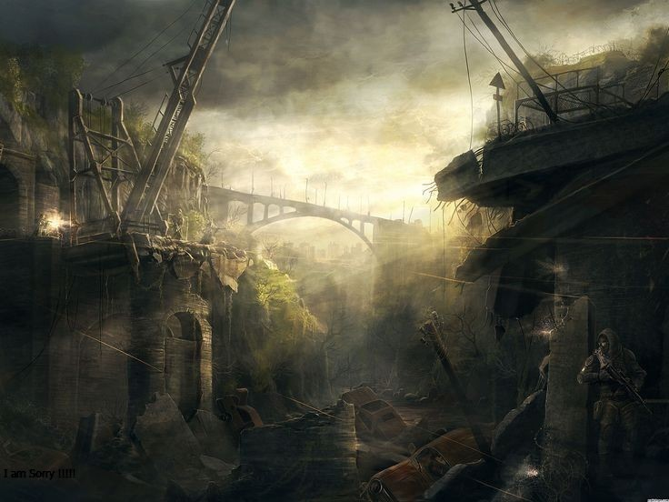

5 เกมยิงปืน FPS สนุก ๆ เล่นเพลิน ในปี 2024 บน PC
"Survival games" คือเกมที่มุ่งเน้นการรอดชีวิตในสถานการณ์ที่ท้าทาย โดยผู้เล่นจะต้องใช้ทรัพยากรและความคิด สร้างสรรค์เพื่อทำลายศัตรู สร้างสิ่งขึ้นมา หรือวางแผนการรับมือกับสภาพแวดล้อมที่ท้าทาย เหมาะสำหรับคนที่ชื่นชอบความท้าทายและการ แก้ปัญหาในสถานการณ์ที่ท้าทายในเกมแบบโลกเปิด. บางเกมยังมีแนวเรื่องเนื้อเรื่องที่น่าสนใจ หรือภาพกราฟิกที่สวยงามเพื่อเพิ่มประสบการณ์ ในการเล่นด้วย
1.Minecraft
"Minecraft" เป็นเกมแนว sandbox ที่ให้เสรีภาพในการสร้างโลกแบบบล็อกโดยผู้เล่นสามารถทำอะไรก็ได้ตามความคิดสร้างสรรค์ สร้างสิ่งต่างๆ ตามความอยากในโลกที่เต็มไปด้วยบล็อกขนาดใหญ่ มีตัวละครและสิ่งของต่างๆ ที่น่ารักและมีความเป็นเอกลักษณ์ เป็นเกมที่ให้ เสรีภาพในการสร้างสรรค์และการผจญภัยในโลกที่ไม่มีขอบเขต
2.PUBG
PUBG เป็นเกมแนว Battle Royale ที่ให้ประสบการณ์การต่อสู้ในแผนที่ใหญ่ขนาดใหญ่ 100 คนในการลงเกม เป้าหมายคือการรอดชีวิตในการ สงครามแห่งความดันและยืนยันตัวตน ผู้เล่นต้องหาอาวุธและอุปกรณ์ เพื่อเอาตัวรอดในสถานการณ์ที่เป็นศึกชิงจุดชนะเลิศ มีการให้ความสำคัญกับ กลยุทธ์, การดูแลแผนที่, และทักษะการยิงเพื่อเป็นผู้รอดชีวิตสุดท้ายในเกม การเล่นมีความสนุกและตื่นเต้นมากๆ สำหรับคนที่ชื่นชอบการแข่งขัน และการต่อสู้ในเกมออนไลน์
3.Resident Evil 8: Village
"Resident Evil 8: Village" เป็นตอนใหม่ของซีรีส์ Resident Evil ที่เล่าเรื่องราวต่อจากเหตุการณ์ใน Resident Evil 7 โดย ผู้เล่นจะรับบทเป็น Ethan Winters ที่ต้องเดินทางไปยังหมู่บ้านที่มีสร้างสรรค์และมีบรรยากาศของบานาโมนิก ในหมู่บ้านนี้มีสถานการณ์และบุคคล ที่น่าสยองขวัญ โดยเฉพาะตัวผู้หญิงมิย่าที่เป็นตัวละครที่น่าสงสารและน่ากลัว มีสรรพสิ่งที่น่าสนใจมากมายในเรื่องของสถานที่และเนื้อเรื่องซึ่งทำให้ผู้ เล่นต้องตื่นตาตื่นใจและติดตามเนื้อเรื่องตลอดเกม
4.Outlast 2

"Outlast 2" เป็นเกมสยองขวัญแนว survival horror ที่ผู้เล่นรับบทเป็น Blake Langermann ที่ต้องหาภรรยาที่หายตัวไปในภูเขาแห่งหนึ่ง ในอเมริกาตะวันออก เกมมีบรรยากาศที่มืดมนและน่าขนลุก มีเหตุการณ์และฉากที่น่าสยองขวัญและน่าตกใจ ผู้เล่นต้องใช้กลยุทธ์ในการหนีจากศัตรู และค้นหาคำตอบในภาพลวงตาที่เต็มไปด้วยความลึกลับ เป็นเกมที่มีการเน้นการลอยไปในสถานการณ์ที่น่าสยองขวัญและสร้างความตื่นเต้นให้กับผู้เล่น
5.Silent Hill 2
"Silent Hill 2" เป็นเกมสยองขวัญแนว survival horror ที่ผู้เล่นรับบทเป็น James Sunderland ที่ได้รับจดหมายจากภรรยาที่เสียชีวิต ไปแล้ว ซึ่งทำให้เขาต้องไปสู่เมือง Silent Hill เพื่อค้นหาคำตอบ เมืองนี้เต็มไปด้วยความลึกลับและสถานการณ์ที่น่าสยองขวัญ มีเหตุการณ์และ รรยากาศที่ทำให้ผู้เล่นต้องระวังและตื่นตาตื่นใจ มีเนื้อเรื่องที่ซับซ้อนและสนุกสนาน และมีการสร้างความตื่นเต้นผ่านทางเรื่องราวและฉากต่างๆ มันเป็นเกมที่สร้างความกังวลและความลึกลับได้อย่างยอดเยี่ยม